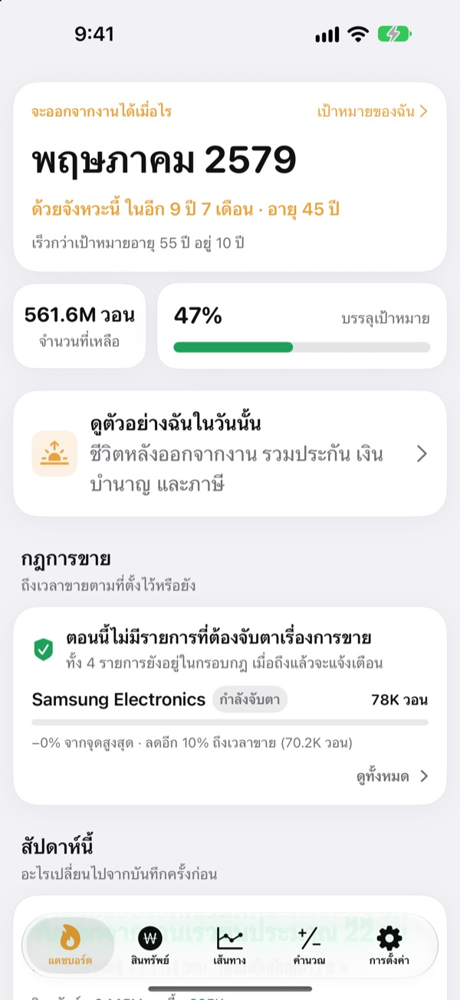
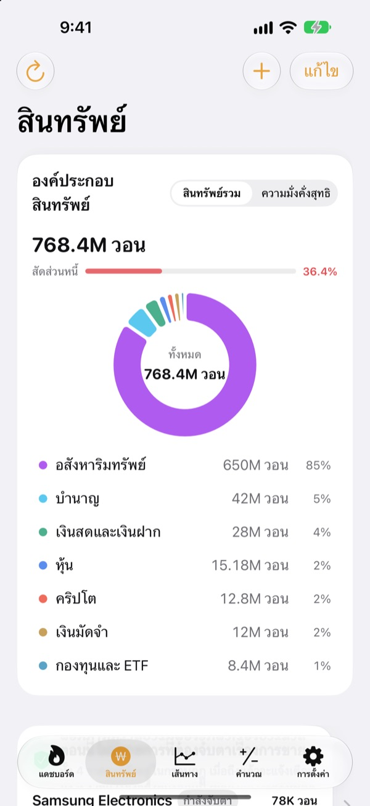
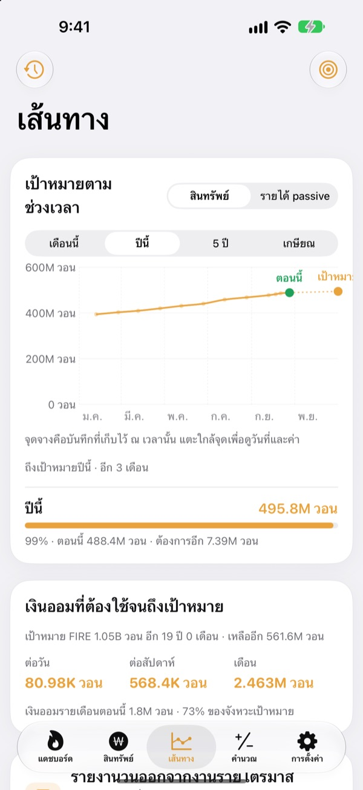
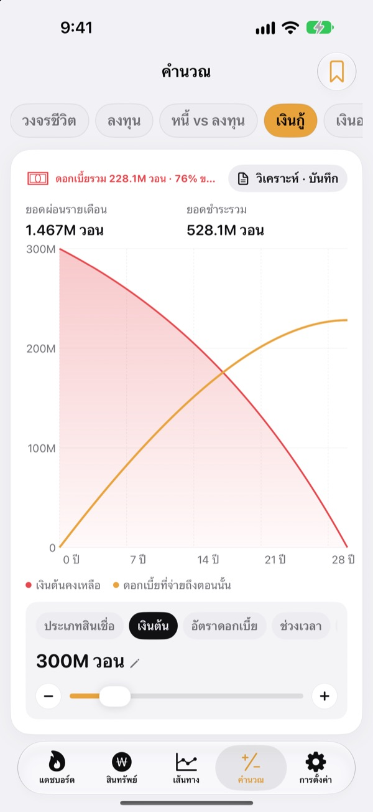

ลาออกได้เมื่อไร
ดูด้วยตัวเลข ไม่ใช่ความรู้สึก
ใส่ค่าใช้จ่ายกับเงินที่เก็บไว้ แล้วจะเห็นเดือนที่คุณลาออกได้ ทุกครั้งที่สินทรัพย์เปลี่ยน ก็เห็นทันทีว่าวันนั้นขยับเข้ามาใกล้หรือถอยออกไป
ไม่ต้องมีบัญชี บันทึกทั้งหมดอยู่ในเครื่องของคุณ

หาวันลาออกของคุณ
ลองเลื่อนแถบดู เป็นการคำนวณแบบเดียวกับหน้าแรกของแอป
ยังคิดในหัวอยู่ไหมว่า "ลาออกได้หรือยัง"
เมื่อเงินในธนาคาร พอร์ตหุ้น เงินบำนาญ และเงินมัดจำอยู่กันคนละที่ แม้แต่ยอดรวมก็ยังเลือนลาง วันลาออกจึงเป็นแค่การเดา Toesagak รวมทุกอย่างไว้ในหน้าจอเดียว แล้วคำนวณเดือนที่คุณลาออกได้ใหม่จากยอดรวมนั้นอยู่เสมอ
สินทรัพย์ทั้งหมดในหน้าจอเดียว
อสังหาริมทรัพย์ หุ้น กองทุนและ ETF บำนาญ เงินสดและเงินฝาก เงินมัดจำ คริปโต และเงินกู้ แยกตามประเภท พร้อมสินทรัพย์รวม ความมั่งคั่งสุทธิ และอัตราส่วนหนี้
ดึงราคาหุ้นและคริปโตมาให้มูลค่าเป็นปัจจุบันเสมอ และแค่ใช้ภาพหน้าจอจากแอปโบรกเกอร์ ก็นำเข้ารายการหุ้นและมูลค่าได้ในครั้งเดียว

ต้องออมวันละเท่าไรจึงถึงเป้า
ดูเป้าหมายของเดือนนี้ ปีนี้ ห้าปี และวันเกษียณ คู่กับบันทึกที่ผ่านมาในกราฟเดียว แอปยังบอกด้วยว่าต้องออมวันละ สัปดาห์ละ หรือเดือนละเท่าไรจึงจะไปตามแผน
เมื่อสินทรัพย์เปลี่ยน บันทึกของสัปดาห์นั้นจะถูกเก็บเอง ประวัติจึงสะสมขึ้นโดยไม่ต้องทำอะไร

คำนวณก่อนตัดสินใจเรื่องใหญ่
มีเครื่องคำนวณเส้นสินทรัพย์ตลอดชีวิต การลงทุน ปิดหนี้หรือลงทุนดีกว่ากัน เงินกู้ เงินฝากและเงินออม อำนาจซื้อของเงินเดือน และการแปลงเงินเป็นชั่วโมง เลื่อนค่าแล้วกราฟจะวาดใหม่ทันที โดยเส้นเดิมยังอยู่เป็นเส้นประให้เทียบ
ตั้งชื่อและบันทึกเงื่อนไขที่ใช้บ่อยไว้ได้

เริ่มได้ในสามขั้น
- 1
ใส่ค่าใช้จ่ายและอายุ
ตัวเลขคร่าว ๆ ก็พอ วันลาออกของคุณจะขึ้นมาทันที
- 2
เพิ่มสินทรัพย์
ยิ่งแยกละเอียด วันที่ก็ยิ่งแม่นยำ
- 3
แวะมาดูเป็นระยะ
บันทึกรายสัปดาห์สะสมขึ้นเอง และแอปเตือนคุณได้ทุกวันที่ 1 ของเดือน
แอปคำนวณอย่างไร
- เป้าหมาย
- ค่าใช้จ่ายหนึ่งปีหลังลาออก ÷ อัตราถอนที่ปลอดภัย (ที่ 4% เท่ากับค่าใช้จ่าย 25 ปี)
- วันลาออก
- เดือนที่ความมั่งคั่งสุทธิ บวกเงินที่ออมทุกเดือน และเติบโตตามผลตอบแทนที่คาดไว้ ไปถึงเป้าหมาย
- สินทรัพย์รวม
- ทุกอย่างที่คุณมีรวมกัน
- ความมั่งคั่งสุทธิ
- สินทรัพย์รวมหักหนี้ เช่น เงินกู้
- ความคืบหน้า
- ความมั่งคั่งสุทธิ ÷ เป้าหมาย ติดตามจากรายได้แบบพาสซีฟ ก็ได้
- ค่าที่ปรับได้
- ค่าใช้จ่ายต่อเดือน อัตราถอน 2 ถึง 6% ผลตอบแทนที่คาด 0 ถึง 12% และอายุที่อยากลาออก
ผลลัพธ์ทั้งหมดเป็นการคำนวณเพื่อการอ้างอิงจากข้อมูลที่คุณกรอก ไม่ใช่คำแนะนำการลงทุน
คำถามที่พบบ่อย
บันทึกของฉันเก็บไว้ที่ไหน
อยู่ในเครื่องของคุณเท่านั้น ไม่ต้องสมัครสมาชิก และไม่มีอะไรส่งไปหาผู้พัฒนา เปิดการซิงค์ iCloud ในการตั้งค่า เพื่อดูบันทึกชุดเดียวกันบน iPhone และ iPad ผ่านบัญชี iCloud ของคุณเอง
ราคาไม่อัปเดต
หุ้นสหรัฐฯ หุ้นเกาหลี คริปโต และอัตราแลกเปลี่ยนใช้ได้เลยโดยไม่ต้องตั้งค่า ตรวจดูการเชื่อมต่ออินเทอร์เน็ตและตัวย่อหรือรหัสหุ้นว่าถูกต้อง ราคาอพาร์ตเมนต์ใช้ข้อมูลอสังหาริมทรัพย์สาธารณะของเกาหลี และต้องใส่คีย์บริการในการตั้งค่า
สินทรัพย์รวมกับความมั่งคั่งสุทธิต่างกันอย่างไร
สินทรัพย์รวมคือทุกอย่างที่คุณมีรวมกัน ความมั่งคั่งสุทธิคือยอดนั้นหักหนี้ เช่น เงินกู้ วันลาออกคำนวณจากความมั่งคั่งสุทธิ
ย้ายบันทึกไปเครื่องใหม่อย่างไร
ใช้ส่งออกในการตั้งค่าเพื่อสร้างไฟล์สำรอง เก็บไว้ในแอปไฟล์ iCloud Drive หรืออีเมล แล้วกู้คืนในเครื่องใหม่ ไฟล์สำรองไม่มีคีย์ API อยู่ด้วย แอปยังเก็บไฟล์สำรองล่าสุด 20 ไฟล์ไว้ในเครื่องให้อัตโนมัติ
การแจ้งเตือนขายทำงานอย่างไร
ตั้งไว้สำหรับแต่ละรายการว่าให้ลดลงจากจุดสูงสุดได้เท่าไร หรือกำหนดราคาเป้าหมาย เมื่อราคาข้ามเส้นนั้น คุณจะได้รับการแจ้งเตือน ตอนราคาขึ้นแอปจะไม่เตือน ราคาจะถูกตรวจเมื่อคุณเปิดแอป และเมื่อ iOS อนุญาตให้ทำงานเบื้องหลัง (ปกติทุกสองสามชั่วโมง) จึงไม่ใช่การติดตามแบบเรียลไทม์
ซ่อนตัวเลขจากคนอื่นได้ไหม
เปิดล็อกแอปในการตั้งค่า แล้วแอปจะเปิดด้วย Face ID หรือรหัสผ่าน เมื่อเปิดล็อกไว้ การเตือนรายเดือนจะไม่แสดงตัวเลขใด ๆ
ขอลองดูก่อนได้ไหม
เปิดข้อมูลตัวอย่างในการตั้งค่า เพื่อดูทุกหน้าจอด้วยสินทรัพย์ของบุคคลสมมติ ปิดแล้วบันทึกของคุณจะกลับมาทันที ใช้ข้อมูลตัวอย่างไม่ได้ขณะเปิดการซิงค์ iCloud
ลบข้อมูลทั้งหมดอย่างไร
เมื่อลบแอป บันทึกทั้งหมดในเครื่องจะถูกลบไปด้วย ถ้าอยากเก็บสำเนาไว้ ให้ส่งออกไฟล์สำรองในการตั้งค่าก่อน
ใช้ตัวเลขเหล่านี้ตัดสินใจลงทุนได้ไหม
ผลลัพธ์ของ Toesagak เป็นการคำนวณเพื่อการอ้างอิงจากข้อมูลที่คุณกรอกและผลตอบแทนที่สมมติไว้ ไม่ใช่คำแนะนำการลงทุน ผลจริงขึ้นอยู่กับตลาดและสถานการณ์ของคุณ
พบข้อผิดพลาด มีไอเดีย หรือมีคำถาม เขียนมาที่ leeo@kakao.com